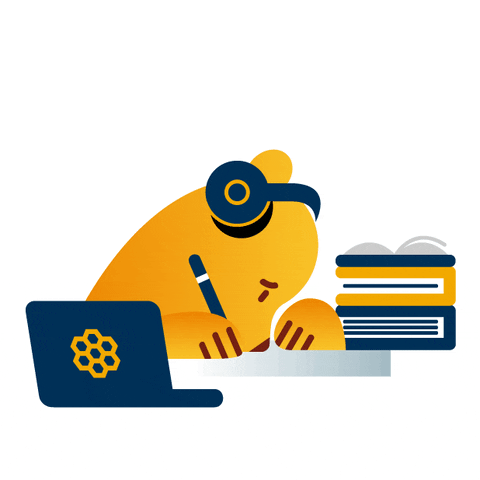

<ion-app>
  <ion-content
    fullscreen
    class="ion-padding"
    scroll-y="false"
    style="--background: #eff5f5"
  >
    <ion-slides #mySlider autoplay="2000">
      <ion-slide>
        <div class="slide">
          
          <div
            class="box-content"
            style="margin-top: -5%; background-color: #d6e4e5; padding: 10px"
          >
            <p class="header-content w-100">Welcome to KidsCourse.</p>
            <p>
              A learning place for children aged 2 to 5 years which is designed
              to be easy to understand for children
            </p>
          </div>

          <button
            class="btn"
            (click)="swipeNext()"
            style="
              position: absolute;
              bottom: 5%;
              left: 37%;
              right: 50%;
              width: 80px;
            "
          >
            <div class="d-flex text-white">
              Next
              <ion-icon
                name="arrow-forward-outline"
                class="ms-2"
                style="color: #fff"
              ></ion-icon>
            </div>
          </button>
        </div>
      </ion-slide>

      <ion-slide id="slide2">
        
        <div
          class="box-content"
          style="margin-top: -5%; background-color: #d6e4e5; padding: 10px"
        >
          <p class="header-content w-100">Why KidsCourse?</p>
          <p>
            KidsCourse has many interesting features and fun learning for kids,
            so they don't get bored easily and love learning.
          </p>
        </div>

        <button
          class="btn"
          (click)="swipeNext()"
          style="
            position: absolute;
            bottom: 5%;
            left: 37%;
            right: 50%;
            width: 80px;
          "
        >
          <div class="d-flex text-white">
            Next
            <ion-icon
              name="arrow-forward-outline"
              class=" ms-2"
              style="color: #fff"
            ></ion-icon>
          </div>
        </button>
      </ion-slide>

      <ion-slide>
        
        <h2 style="font-size: 30px; font-weight: bold; margin-top: -5%">
          Let's study with <br />
          KidsCourse !!!
        </h2>
        <button
          class="btn"
          [routerLink]="['/login']"
          style="
            
            width: 100px;
          "
        >
          <div class="d-flex text-white">
            Get Started
          </div>
        </button>
      </ion-slide>
    </ion-slides>
  </ion-content>
</ion-app>
